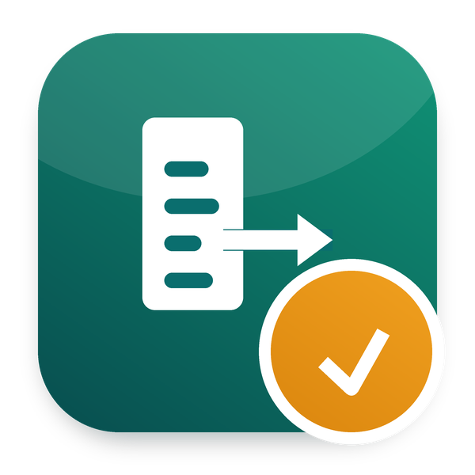

Register the salary payments in Accounting as you export the bank file
Part of Odoo 20 HRMS - Odoo Mates · Odoo 20 Community and Enterprise
Tick Register the Payments and choose the bank journal
The payslips still to pay get their payments in Accounting
The payment status of each payslip follows
The option is shown to the users with the Accounting rights of Invoicing (Billing) or more. The net salary rule needs a credit account that allows reconciliation, as for Pay Salaries.
Works with Odoo 20 Community and Odoo 20 Enterprise. On Enterprise, it cannot be installed together with the Enterprise Payroll app: both define the same records. Use one or the other.
om_hr_payroll_export, om_hr_payroll_account. It installs by itself once they are all installed.
Odoo Mates HR
The HR suite of Odoo Mates for Odoo 20: every module installs on its own, the links between them are bridges.
Support: odoomates@gmail.com